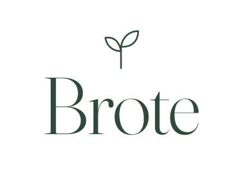

Ropa para los primeros meses.
Lo justo, suave y listo para regalar.
Hola, somos Brote 🌱
Ropa para los primeros meses.
Lo justo, suave y listo para regalar.
Hola, somos Brote 🌱
Dónde se pierde más plata cuando armás el ajuar, y cómo evitarlo.

El talle RN se usa pocas semanas. Algunos bebés nacen directo en 0–3.
Hasta 90 días.
Sin uso y con etiqueta.
Aunque la caja esté abierta.
